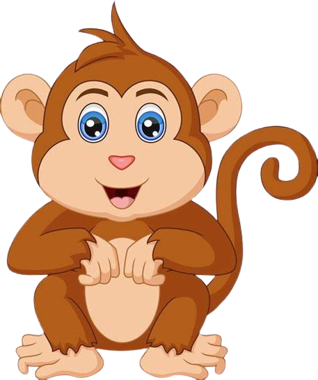

Un mono es un animal muy divertido que vive en los árboles de la selva, tiene dos brazos, dos piernas y una cola larga. Los monos son muy ágiles y les encanta saltar de rama en rama y jugar con sus amigos también son muy inteligentes y curiosos.
jajaja es igualito a ti